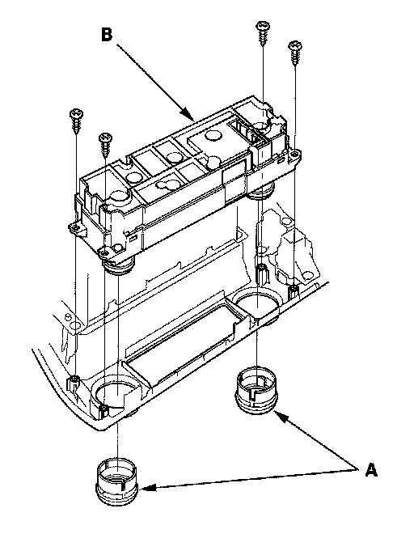

Control Module HVAC: Service and Repair
HVAC Control Unit Removal and Installation1. Remove the center panel.

2. Remove the dials (A), the self-tapping screws, and the HVAC control unit (B).
3. Install the control unit in the reverse order of removal. After installation, operate the various functions to make sure they work properly.
4. Run the self-diagnostic function to confirm that there are no problems in the system.